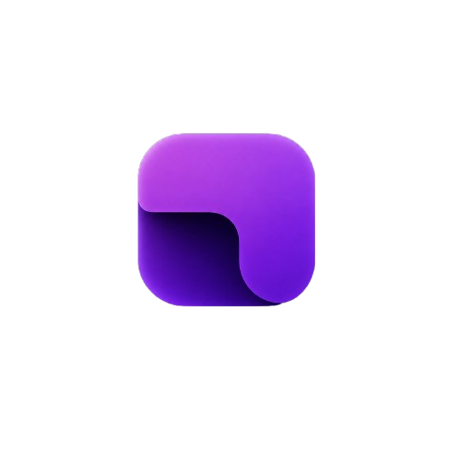

01
Ad shield
Known advertising resources are blocked before they crowd the page.Bilinen reklam kaynakları sayfayı doldurmadan engellenir.

LokumLokum is a lightweight browser for people who want less clutter, clearer protection, and more control over the web.Lokum daha az karmaşa, daha net koruma ve web üzerinde daha fazla kontrol isteyenler için hafif bir tarayıcıdır.
Quiet by default.
Sharp when it matters.
Lokum keeps the browser focused. The tools are practical, the defaults are considered, and the data stays close to home.Lokum tarayıcıyı odaklı tutar. Araçlar pratik, varsayılanlar düşünülmüş ve veriler evine yakın kalır.
Known advertising resources are blocked before they crowd the page.Bilinen reklam kaynakları sayfayı doldurmadan engellenir.
Known scam and phishing signals get blocked or called out.Bilinen dolandırıcılık ve kimlik avı sinyalleri engellenir veya belirtilir.
Optional local analysis helps flag suspicious AI-generated images.İsteğe bağlı yerel analiz şüpheli yapay zekâ görsellerini işaretler.
Clear supported data for one open site and start clean.Açık bir sitenin desteklenen verilerini temizle ve temiz başla.
History, bookmarks, downloads, settings, and profile data stay on your device.Geçmiş, yer imleri, indirmeler, ayarlar ve profil verileri cihazında kalır.
Custom tabs, colors, wallpapers, shortcuts, and groups.Sana ait sekmeler, renkler, duvar kağıtları, kısayollar ve gruplar.
You do not need another platform. You need a browser that respects your attention.Başka bir platforma ihtiyacın yok. Dikkatine saygı duyan bir tarayıcıya ihtiyacın var.
Lokum is available for Windows through the Microsoft Store. No account layer. No subscription layer.Lokum, Microsoft Store üzerinden Windows için kullanılabilir. Hesap katmanı yok. Abonelik katmanı yok.
Download LokumLokum'u indir